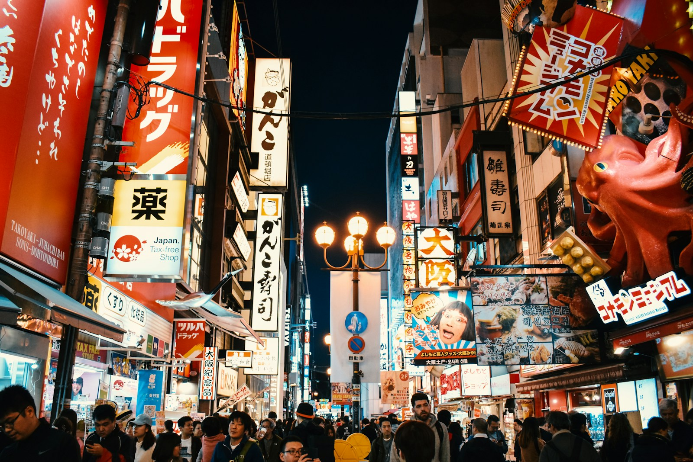
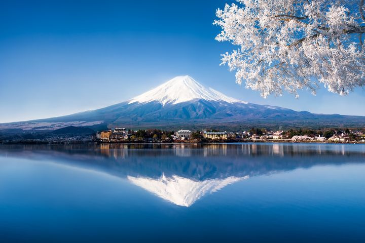

日本
日本是一個充滿魅力的國家，以其獨特的文化、悠久的歷史和壯麗的自然風光而聞名於世。這個由四個主要島嶼組成的國家——本州、北海道、九州和四國，提供了豐富多樣的旅遊體驗，從繁華的都市生活到寧靜的鄉村風景無所不包。文化融合
以下是一些主要的旅遊景點以及它們的歷史和文化詳細介紹：
旅遊景點

富士山
歷史:
富士山是日本最高的山峰，海拔3,776米，長期以來被視為日本的象徵。它在歷史上被認為是神聖的，早在公元前的歷史記載中便已有提及。富士山是一座活火山，最後一次噴發發生在1707年，形成了現在的美麗景觀。
文化：
富士山被許多文學作品、藝術作品和詩歌所讚美，成為了日本文化的重要元素。它不僅是信仰的象徵，也是無數藝術家的靈感來源，經典的浮世繪《富嶽三十六景》便是對富士山的讚美。
景點：
1. 五合目 ：
遊客可以乘車或徒步到達五合目，欣賞壯觀的景色，這裡也是登山者的起點。
2. 富士山本宫淺間神社 ：
位於富士山腳下的神社，供奉著富士山的守護神，是朝聖者必訪的地方。
3. 富士湖 ：
如河口湖和山中湖，提供絕佳的觀賞角度，夏季可進行划船和釣魚等活動。

京都
歷史:
京都曾是日本的首都，長達千年，見證了日本的繁榮與衰落。自794年平安京建立以來，京都成為了日本文化、藝術及學術活動的中心，至今仍保存著大量的歷史遺跡
文化：
作為日本的文化之都，京都擁有豐富的傳統文化，包括優雅的茶道、花道和和服。這裡的許多寺廟和神社被列入世界遺產，展示了日本古代建築的美。
景點：
1. 金閣寺 ：
又名鹿苑寺，是一座金箔裝飾的禪寺，屬於世界文化遺產，四周的庭院與池塘相映成趣。
2. 清水寺 ：
這座古老的寺廟以其懸空的木製舞台而聞名，是欣賞櫻花和秋葉的理想場所。
3. 嵐山竹林 ：
這片竹林提供寧靜的步道，讓遊客沉浸在自然之中，也是攝影愛好者的天堂。

大阪
歷史:
大阪是日本的第三大城市，歷史可追溯到古代，曾是日本的商業中心之一。從大阪城的建立到其在戰國時代的影響力，大阪見證了多次歷史變遷。
文化：
大阪以其豐富的飲食文化而聞名，尤其是小吃文化，如章魚燒和串燒等，深受當地人和遊客的喜愛。此外，大阪人熱情好客，形成了獨特的市民文化。
景點：
1. 大阪城 ：
這座歷史悠久的城堡以其雄偉的建築和美麗的公園而著稱，是遊客了解大阪歷史的好去處。
2. 道頓堀 ：
大阪的娛樂和美食中心，燈火通明的招牌和豐富的小吃讓人流連忘返。
3. 天保山大觀覽車 ：
位於大阪港的摩天輪，提供壯觀的城市和海灣景色，特別是在夜晚。